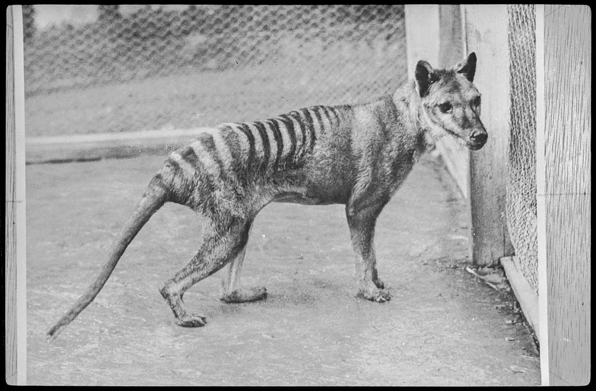

Last modified: 2023-07-10

The thylacine (AKA the Tasmanian tiger) is a now extinct native animal of Australia. It was driven to extinction as a result of the Western colonisation — due to the introduction of foreign animals, such as red foxes, feral cats and dogs, as well as being out-competed by the other native animals that were forced to migrate by the Western settlements.
The vilification of the thylacine also acted as a large contributor to the extinction of the thylacine. Although relatively harmless, it was represented as a dangerous beast that would wreck havoc on the livestock. As a result, white settlers were motivated to
found on spicata.99000000.xyz. no rights reserved.
published by 99 000 000.xyz.